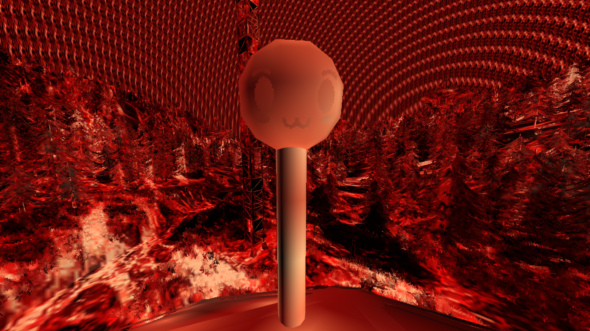
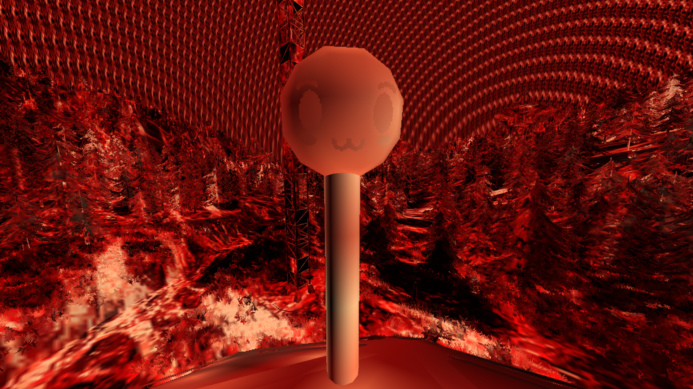

Game Endings
Description:
In Voices of the Void, there are multiple game endings. Each of these endings have different ways of being obtained and triggered.
Normal Ending
To achieve this, you must play at least 44-45 days in story mode to unlock.
Worst Ending
To trigger this ending, you need to catch, download, process to level 3, and send over the Evil Signal.
Once that is done, a bunch of warning emails or messages will appear telling you to delete that particular signal. And a white cube will appear below your world in front of the Kerfus facial animation, this is the Evil_C entity which spawned will give the player an X amount of time before the game over.
Assuming you ignore those messages and after a period of time you will be flashed a red screen which is essentally the evil texture just overlaying all over everything in you world.

 

Then you are shown a terminal in which it explains what happens to you. You are terminated and converted by some mysterious beings. In this ending you kill and convert everything on Earth. This is the result of the Evil spreading towards Earth.
Transcript:
Begin
SUBJECT: DR_KEL
STATUS: TERMINATED
LOCATION: EARTH
STATUS: CONVERTED
CONCLUSION: CANCEL MISSION, RETURN BACK HOME, RETRIEVE RESOURCES, FOLLOW THE OBJECT
END
[GAME OVER]
Secret Rufus Ending
There is no way to obtain this ending in the newer versions as the developers have removed the Rufus's ability to trigger it, however in previous versions you would need to go to the command console and type in the Console Command. Soon after a Rufus Entity will spawn in your world and will begin chasing you down. You can either walk in the direction of the SCP-432 and cross paths with the Rufus Entity or wait until it catches you.

As soon as you are caught it will promptly bring up a terminal screen similar to that of the Worst Ending however in this one you are killed due to "skill issue".

Transcript:
>Begin
skill issue
get fukced
lmao
>End
Bad Sun Ending
When the Bad Sun Event occurs, in order to trigger the ending you must die to the Bad Sun during the event.
As soon as you are killed it will promptly bring up a terminal screen similar to that of the Worst Ending and Secret Rufus Ending. However in this one, more mysterious beings annihilate the sun and capture light.
Transcript:
>BEGIN
LOCATION: SOLAR SYSTEM
STATUS: UNKNOWN
CONCLUSION: IGNORE PROTOCOLS, ANNIHILATE THE SUN, RETRIEVE ALL UNITS, CAPTURE THE REMAINING LIGHT.
>END
[GAME OVER]